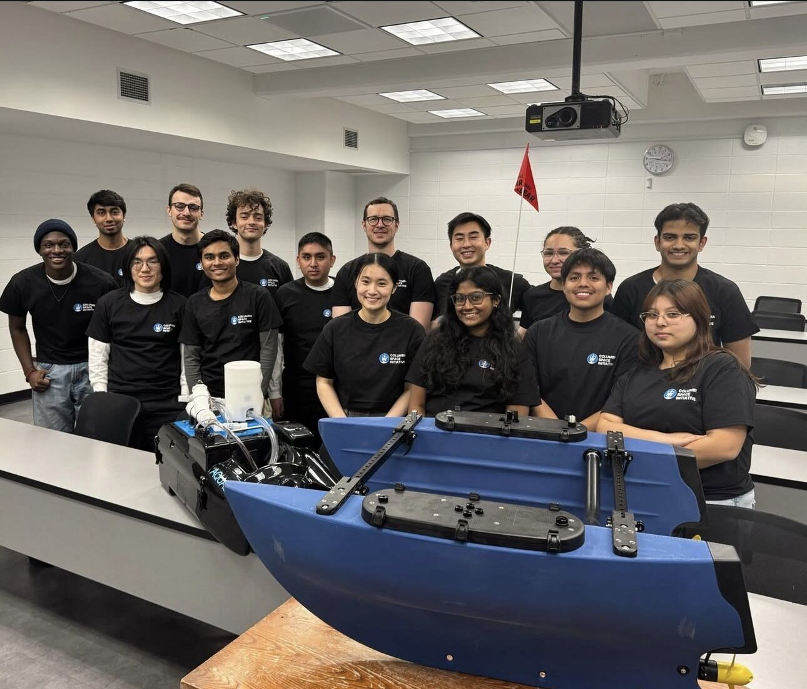

AQUAS

AQUAS is an autonomous boat meant to treat algae blooms in local ponds. I worked on its hardware, mainly keeping water away from the electronics and weight off the sensor buoy, which ended up 20% lighter. I designed in Fusion 360, then built the enclosures by soldering, laser cutting, and CNC machining. The biggest lesson was to use parametric CAD models from the start. Fixed models cost us time every time the design changed.